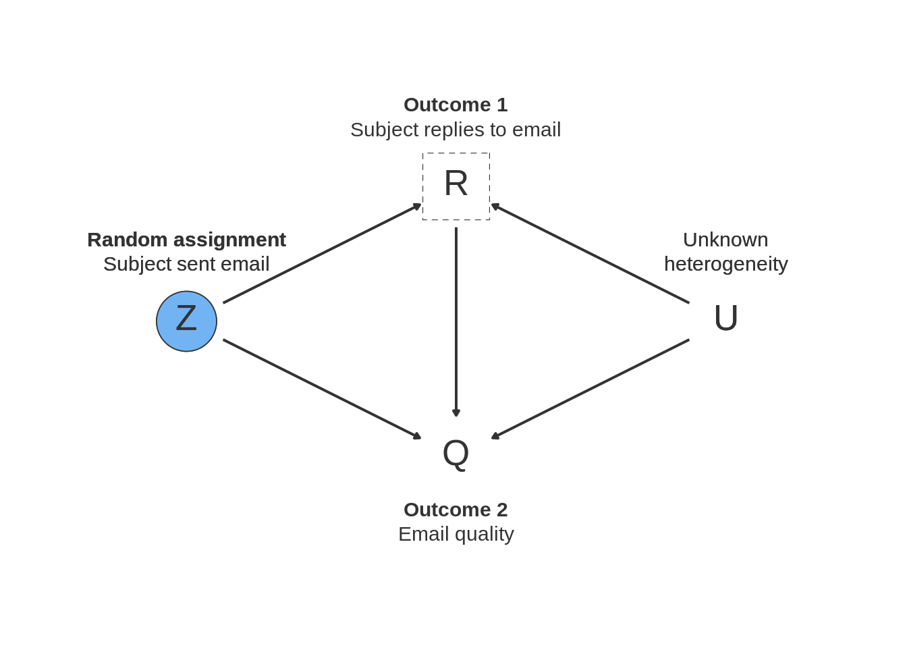

14.1 Random sampling
14.1.1 Declaration
14.1.2 Dag

14.1.3 Example
14.1.4 Simple random sampling
Often we are interested in features of a population, but data on the entire population is prohibitively expensive to collect. Instead, researchers obtain data on a small fraction of the population and use measurements taken on that sample to draw inferences about the population.
Imagine we seek to estimate the average political ideology of residents of the small town of Portola, California, on a left-right scale that varies from 1 (most liberal) to 7 (most conservative). We draw a simple random sample in which all residents have an equal chance of inclusion in the study. It’s a straightforward design but formally declaring it will make it easy to assess its properties.
14.1.4.1 Design Declaration
Model:
Even for this most basic of designs, researchers bring to bear a background model of the world. As described in Chapter 1, the three elements of a model are the signature, probability distributions over variables, and functional equations among variables. The signature here is a specification of the variable of interest, \(Y\), with a well defined domain (seven possible values between 1 and 7). In the code declaration below, we assume a uniform distribution over these 7 values. This choice is a speculation about the population distribution of \(Y\); some features of the design diagnosis will depend on the choice of distribution. The functional equations seem absent here as there is only one variable in the model. We could consider an elaboration of the model that includes three variables: the true outcome, \(Y\); the decision to measure the outcome, \(M\); and the measured outcome, \(Y^M\). We ignore this complication for now under the assumption that \(Y = Y^M\), i.e., that \(Y\) is measured perfectly. Finally, the model also includes information about the size of the population. Portola, California, has a population of approximately 2100 people as of 2010, so \(N = 2100\).
Inquiry:
Our inquiry is the population mean of \(Y\): \(\frac{1}{N} \sum_1^N Y_i = \bar{Y}\).
Data strategy:
In simple random sampling, we draw a random sample without replacement of size \(n\), where every member of the population has an equal probability of inclusion in the sample, \(\frac{n}{N}\). When \(N\) is very large relative to \(n\), units are drawn approximately independently. In this design we measure \(Y\) for \(n=100\) units in the sample; the other \(N-n\) units are not measured.
Answer strategy:
We estimate the population mean with the sample mean estimator: \(\widehat{\overline{Y}} = \frac{1}{n} \sum_1^n Y_i\). Even though our inquiry implies our answer should be a single number, an answer strategy typically also provides statistics that help us assess the uncertainty around that single number. To construct a 95% confidence interval around our estimate, we calculate the standard error of the sample mean, then approximate the sampling distribution of the sample mean estimator using a formula that includes a finite population correction. In particular, we approximate the estimated sampling distribution by a \(t\) distribution with \(n - 1\) degrees of freedom. In the code for our answer strategy, we spell out each step in turn.
14.1.4.2 Takeaways
With the design declared we can run a diagnosis and plot results from Monte Carlo simulations of the design:
diagnosis <- diagnose_design(
design, sims = sims, bootstrap_sims = b_sims, diagnosands = diagnosands) The diagnosis indicates that under simple random sampling, the sample mean estimator of the population mean is unbiased. The graph on the left shows the sampling distribution of the estimator: it’s centered directly on the true value of the inquiry. Confidence intervals also have a sampling distribution – they change depending on the idiosyncrasies of each sample we happen to draw. The figure on the right shows that the 95% of the time the confidence intervals cover the true value of the estimand, as they should. As sample size grows, the sampling distribution of the estimator gets tighter, but the coverage of the confidence intervals stays at 95% – just the properties we would want out of our answer strategy.
Things work well here it seems. In the exercises we suggest some small modifications of the design that point to conditions under which things might break down.
14.1.5 Stratified and clustered random sampling
Researchers often cannot randomly sample at the individual level because it may, among other reasons, be too costly or logistically impractical. Instead, they may choose to randomly sample households, political precincts, or any group of individuals in order to draw inferences about the population. This strategy may be cheaper and simpler but may also introduce risks of less precise estimates.
Say we are interested in the average party ideology in the entire state of California. Using cluster sampling, we randomly sample counties within the state, and within each selected county, randomly sample individuals to survey.
Assuming enough variation in the outcome of interest, the random assignment of equal-sized clusters yields unbiased but imprecise estimates. By sampling clusters, we select groups of individuals who may share common attributes. Unlike simple random sampling, we need to take account of this intra-cluster correlation in our estimation of the standard error.12 The higher the degree of within-cluster similarity, the more variance we observe in cluster-level averages and the more imprecise are our estimates.13 We address this by considering cluster-robust standard errors in our answer strategy below.
14.1.5.1 Design Declaration
- Model:
We specify the variable of interest \(Y\) (political ideology, say) as a discrete variable ranging from 1 (most liberal) to 7 (most conservative). We do not define a functional model since we are interested in the population mean of \(Y\). The model also includes information about the number of sampled clusters and the number of individuals per cluster.
- Inquiry:
Our estimand is the population mean of political identification \(Y\). Because we employed random sampling, we can expect the value of the sample mean (\(\widehat{\overline{y}}\)) to approximate the true population parameter (\(\widehat{\overline{Y}}\)).
- Data strategy:
Sampling follows a two-stage strategy. We first draw a random sample 30 counties in California, and in each county select 20 individuals at random. This guarantees that each county has the same probability of being included in the sample and each resident within a county the same probability of being in the sample. In this design we estimate \(Y\) for n = 600 respondents.
- Answer strategy:
We estimate the population mean with the sample mean estimator: \(\widehat{\overline{Y}} = \frac{1}{n} \sum_1^n Y_i\), and estimate standard errors under the assumption of independent and heteroskedastic errors as well as cluster-robust standard errors to take into account correlation of errors within clusters. Below we demonstrate the the imprecision of our estimated \(\widehat{\overline{Y}}\) when we cluster standard errors and when we do not in the presence of an intracluster correlation coefficient (ICC) of 0.402.
N_blocks <- 1
N_clusters_in_block <- 1000
N_i_in_cluster <- 50
n_clusters_in_block <- 30
n_i_in_cluster <- 20
icc <- 0.402
# M: Model
fixed_pop <-
declare_population(
block = add_level(N = N_blocks),
cluster = add_level(N = N_clusters_in_block),
subject = add_level(N = N_i_in_cluster,
latent = draw_normal_icc(mean = 0, N = N, clusters = cluster, ICC = icc),
Y = draw_ordered(x = latent, breaks = qnorm(seq(0, 1, length.out = 8)))
)
)()
cluster_sampling_design <- declare_population(data = fixed_pop) +
# I: Inquiry
declare_estimand(Ybar = mean(Y)) +
# D: Data Strategy
declare_sampling(strata = block,
clusters = cluster, n = n_clusters_in_block,
sampling_variable = "Cluster_Sampling_Prob") +
declare_sampling(strata = cluster, n = n_i_in_cluster,
sampling_variable = "Within_Cluster_Sampling_Prob") +
# A: Answer Strategy
declare_estimator(Y ~ 1,
model = lm_robust,
clusters = cluster,
estimand = "Ybar",
label = "Clustered Standard Errors")14.1.5.2 Takeaways
| Design Label | Estimand Label | Estimator Label | Term | N Sims | Bias | RMSE | Power | Coverage | Mean Estimate | SD Estimate | Mean Se | Type S Rate | Mean Estimand |
|---|---|---|---|---|---|---|---|---|---|---|---|---|---|
| cluster_sampling_design | Ybar | Clustered Standard Errors | (Intercept) | 500 | 0.01 | 0.25 | 1.00 | 0.95 | 3.97 | 0.25 | 0.25 | 0.00 | 3.97 |
| (0.01) | (0.01) | (0.00) | (0.01) | (0.01) | (0.01) | (0.00) | (0.00) | (0.00) |
To appreciate the role of clustering better we also plot simulated values of our estimand with standard errors not clustered and with clustered standard errors. To do this we first add an additional estimator to the design that does not take account of clusters.
new_design <- cluster_sampling_design + declare_estimator(Y ~ 1,
model = lm_robust,
estimand = "Ybar",
label = "Naive Standard Errors")
The figure above may give us the impression that our estimate with clustered standard errors is less precise, when in fact, it correctly accounts for the uncertainty surrounding our estimates. The blue lines in the graph demonstrate the estimates from simulations which contain our estimand. As our table and graphs show, the share of these simulations over the total number of simulations, also known as coverage, is (correctly) close to 95% in estimations with clustered standard errors and 54% in estimations without clustered standard errors. As expected, the mean estimate itself and the bias is the same in both specifications.
14.1.5.3 Exercises
- Modify the declaration to change the distribution of \(Y\) from being uniform to something else: perhaps imagine that more extreme ideologies are more prevalent than moderate ones. Is the sample mean estimator still unbiased? Interpret your answer.
- Change the sampling procedure to favor units with higher values of ideology. Is the sample mean estimator still unbiased? Interpret your answer.
- Modify the estimation function to use this formula for the standard error: \(\widehat{se} \equiv \frac{\widehat\sigma}{\sqrt{n}}\). This equation differs from the one used in our declaration (it ignores the total population size \(N\)). Check that the coverage of this new design is incorrect when \(N=n\). Assess how large \(N\) has to be for the difference between these procedures not to matter.
The intra-cluster correlation coefficient (ICC) can be calculated directly and is a feature of this design.↩
In ordinary least square (OLS) models, we assume errors are independent (error terms between individual observations are uncorrelated with each other) and homoskedastic (the size of errors is homogeneous across individuals). In reality, this is often not the case with cluster sampling.↩